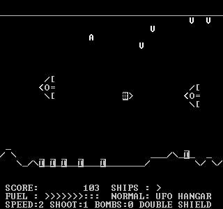

ASCII-Scramble is a shoot'em up for
MS DOS text mode using only ASCII
characters. It also works with Windows provided you know how to get an MS
DOS prompt or command line. For other platforms, you can use DOSBox.
Main features are:
For installation, controls and more information, read the README.TXT.
ASCII-Scramble is distributed under the BSD license. To obtain the source code, visit <https://github.com/roskakori/ASCII-Scramble>. Use Turbo Pascal 5.5 or later to compile (available for free).